This is our sales page. We're going to list the items that we currently use. But, you're most definitely not limited to just these options. When buying equipment or apparel you want to in into consider your position (glove), your size (pants), what brand of shoes is comfortable to you (cleats), and your strength and height (bat). There are countless numbers of websites and stores you can go to to look at equipment or apparel to be prepared for a game, practice, or just having fun. Some popular places like Scheels, Dick's Sporting Goods, or even just the actual brand website like Rawlings or Marucci. Or, there is also fan gear you can buy for your favorite team whether it's a major league team or college.
Baseball and Softball Bats, Louisville Xeno, Marucci Cat 8
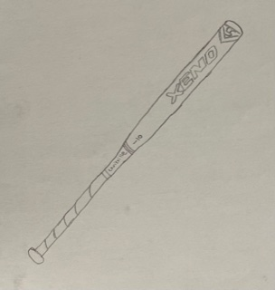 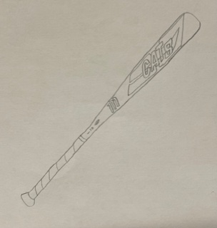Baseball and Softball Gloves, Rawlings Baseball Glove, Rawlings Softball Glove
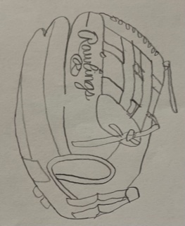 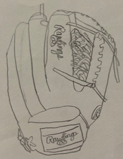Baseball and Softball Balls
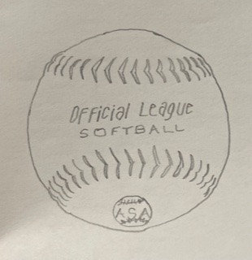 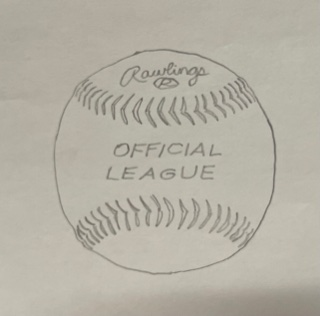Baseball and Softball Pants, Nike
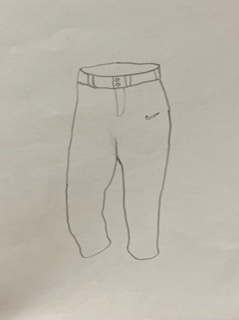 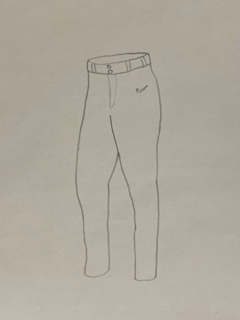Baseball and Softball Helmets, Easton
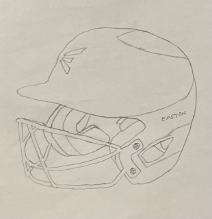 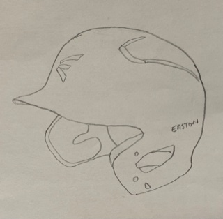Baseball and Softball Cleats, New balance, Nike
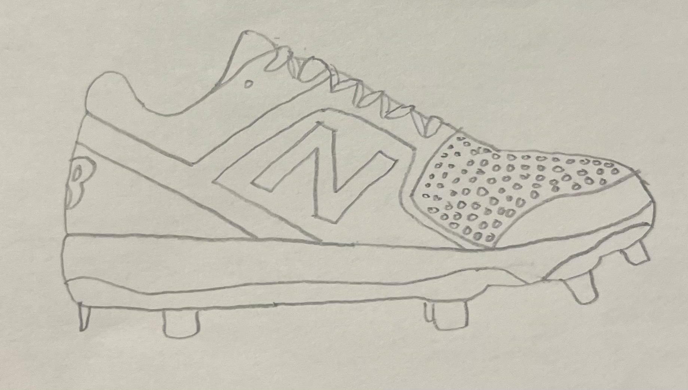 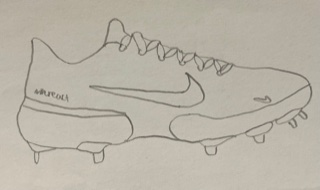